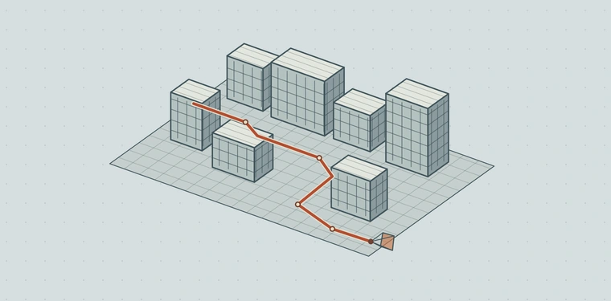

当前帧的位姿从哪来
自动定容项目用相机观察瓶身和刻度。设想瓶子固定在桌上，相机绕桌移动。要估计相机的路线，就得找出不同画面中对应于同一处实物的特征。
在 ORB-SLAM3 里，单目图像从 System::TrackMonocular 进入 Tracking::GrabImageMonocular。地图初始化后，跟踪模块把当前帧的特征与已有地图点匹配。地图点投影到图像的预测位置与实测像素之间有个差值，称为重投影误差。多组可靠匹配提供了调整当前位姿的依据。
哪些帧能补出深度
沿桌边平移时，同一个瓶身角点在两帧中的位置会变。两条观测射线从不同的相机中心出发，有足够视差、匹配也正确，才适合用来估计深度。相机如果只在原处旋转，两条射线起点重合，单凭这对观测求不出深度。
ORB-SLAM3 将选出的关键帧送入局部建图线程，联合调整附近的关键帧位姿与地图点。重新经过已建图的位置时，回环线程会验证两次观测的几何关系，再校正累计漂移。对应实现分别在 Tracking、LocalMapping 和 LoopClosing 中。
为什么向前走会得到负平移
Tcw 把世界坐标变到相机坐标。假设两套坐标轴方向相同，相机中心在世界系的 (1, 0, 0) 米处。对一个世界坐标为 (3, 0, 2) 米的点，相机看到的坐标应是 (2, 0, 2) 米。因此 Tcw 在 x 方向的平移是 −1 米。
画相机中心的世界轨迹，要取逆变换 Twc = Tcw⁻¹ 的平移。ORB-SLAM3 的 System.cc 导出关键帧轨迹时已经取了逆位姿。读文件要核对导出函数，重复取逆又会回到原方向。这里的一米仅用于验算符号，纯单目重建仍需外部度量约束才能确定绝对尺度。
把一个地图点投回去
COLMAP 的图像位姿同样采用世界到相机的变换。若旋转和平移分别为 R 和 t，相机中心的世界坐标就是 −Rᵀt。取一帧图像和它确实观测到的三维点，变换到相机系后统计深度为正的比例。大量观测点出现在相机后方时，检查变换方向和坐标轴定义。
把正深度的点按该帧的相机模型投回原图，再与记录的二维关键点比较。逐帧看误差中位数及第 95 百分位数。如果中位数较小而后者明显升高，放大那一帧误差最大的几处匹配。轨迹曲线是否平滑，回答不了这些角点有没有投回原位。